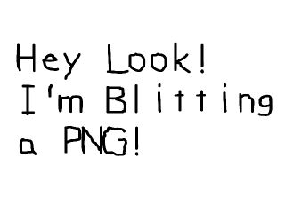

SDL仅原生地支持bmp格式的图片文件，但是通过使用SDL_image这个扩展库，你将可以加载BMP, PNM, XPM, LBM, PCX, GIF, JPEG, TGA 和 PNG 格式的图片文件。扩展库能让你使用基本SDL不原生支持的特性。安装和配置SDL扩展库不是一件难事，我甚至要说这比配置基本SDL还要容易。本节课将教您如何使用SDL_image扩展库。
请选择您的操作系统及编程环境：
译者注：针对国内实际情况，仅翻译了常用编程环境的配置教程，如需查看更多环境的配置方法，请查看
英文原文！
|
Dev C++ 4.9.9.2 Code::Blocks 8.02 Visual Studio.NET 2010 Express |
|
|
Eclipse 3.0 |
|
XCode 3.2 |